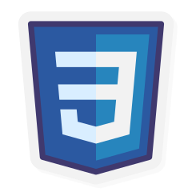
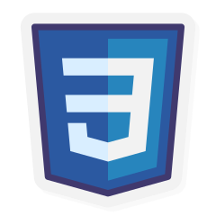

Sou estudante de Análise e desenvolvimento de sistema; moro em
Pato Branco-Paraná , tenho 17 anos, e atualmente estou no segundo
período do ensino médio
técnico.Todas
as matérias técnicas que estou cursando:
Banco de dados, Ciêcias da computação, Java e Html &
Css.
Dentre
todas as que mais tenho afinidade são as de programação.Em relação a
cursos, tento
sempre
ficar bem informado sobre novas tecnologias, sempre
buscando meu melhor. Inclusive Python é uma
linguagem que estudo pela
plataforma de estudos, Udemy.

 
